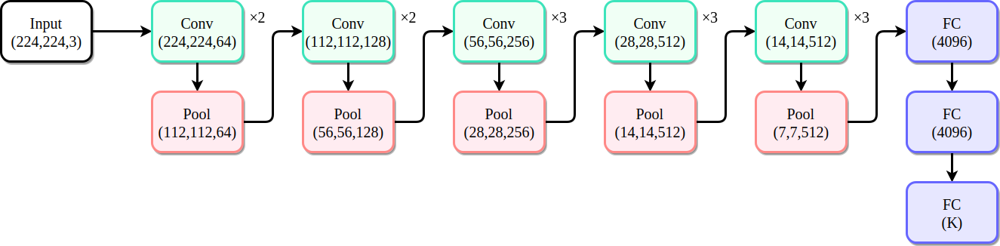
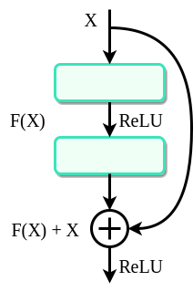

相关理论基础
2.1 卷积神经网络
卷积神经网络(Convolutional Neural Network，CNN)是一种前馈神经网络，其核心思想通过局部连接、权值共享和空间下采样等机制，有效降低参数数量并提取数据的层次化特征，在图像识别、目标检测等计算机视觉领域以及自然语言处理、语音识别等领域取得了显著成就。CNN的基本结构由卷积层、激活函数层、池化层和全连接层构成。 卷积层是卷积神经网络的关键组成部分。卷积操作由卷积核完成。每个卷积核相当于
一个特征检测器，通过参数可训练的卷积核在输入特征图上进行卷积操作提取局部特征，例如边缘、纹理、颜色等。卷积核权重参数共享机制使得网络对平移变化具有鲁棒性，同时大幅度减少权重参数数量。一般卷积操作包含三个关键参数：卷积核大小决定感受野大小；步长大小表示卷积核每次移动的大小，影响控制输入特征图降采样速度；填充方式指的是在输入特征矩阵外围进行填充，会影响输出特征图的空间维度。一次卷积操作后的输
出特征图大小如式(2.1)所示：
其中，input为输入特征矩阵大小，k为卷积核大小，s为步长，p为填充补零数，output为卷积后得到的输出特征矩阵大小。
激活函数层可以引入非线性因素打破线性模型的局限性，使网络能够学习和拟合更复杂的函数映射关系。常用的激活函数有Sigmoid、ReLU、Tanh和Leaky ReLU等。Sigmoid激活函数输出结果范围是(0，1)，适合用于输出预测概率的模型。Tanh激活函数是Sigmoid的变形，其输出结果范围是(-1，1)。ReLU(Rectified Linear Unit)激活函数可以加快模型收敛，并且可以缓解梯度消失问题。ReLU 函数计算过程相对简单，仅需对输入值执行简单的阈值操作，数学表达式如式(2.2)所示。ReLU函数能够有效缓解传统神经网络中普遍存在的梯度消失问题，但缺点是会出现神经元死亡的问题。Leaky ReLU解决了ReLU输入值为负时神经元死亡的问题，同时不需要进行指数运算，计算复杂度低，数学表达式如式(2.3)所示。
池化层实际上是下采样层，主要通过最大值或平均值操作对特征图进行空间下采样。每次卷积操作后，特征会变得越来越高维，但是特征矩阵的大小却没什么变化。这种情况下会生成大量的参数，增大了网络的计算量，所以一般会加上一个池化层进行降低维度减少参数量。常见的池化方法有最大池化、平均池化和随机池化等。
全连接层位于卷积神经网络的末端，是由多个神经元组成的单层结构。全连接层将经过多次卷积和池化操作后得到的特征图展平，然后与该层的神经元进行连接，对提取到的特征进行分类或回归等任务。
2.1.1 VGG卷积神经网络
VGG(Visual Geometry Group)网络由牛津大学的计算机视觉组(Visual Geometry Group)和Google DeepMind公司的研究人员共同研发，凭借其独特设计与卓越性能，在计算机视觉领域中的图像识别、目标检测、语义分割等多个关键方向具有重要的地位。
VGG网络的架构比较简单，主要通过堆叠一系列的卷积层和池化层来构建深度网络，最后连接全连接层以完成目标任务。VGG网络的卷积层配置的核心特征是使用小尺寸卷积核。与大尺寸卷积核相比，小尺寸卷积核在保持相同感受野的前提下，通过增加卷积层的数量引入更多非线性变换，从而能够学习更复杂的特征表示；同时，小卷积核的参数规模更小，可有效减少网络参数总量，降低模型过拟合的风险。随着网络深度的增加，模型能够逐层提取从低级到高级的抽象特征，其中VGG-16和VGG-19模型因深度与性能的平衡优化表现突出[29]。VGG-16的模型结构图如图2.1所示。

图2.1VGG模型结构图
VGG-16网络卷积层共13层，均采用3×3大小的小卷积核，步长为1，填充为1，通道数逐渐从64增大到512；池化层共5层，均采用2×2最大池化，步长为2，每次将输入特征图大小减半；全连接层3层，最后一层对应任务的输出，此处K取1000则为ImageNet的1000类分类任务。VGG-19网络相比VGG-16网络增加了3层卷积层，将神经网络的层次进一步加深，可以捕获更深层抽象的特征。
VGG模型最初是为ImageNet大规模图像分类任务设计。但在ImageNet数据集上预训练后，VGG模型能够很好的提取到多种层次的特征，可以将它的特征提取能力用在风格迁移任务上。
2.1.2 ResNet卷积神经网络
深度神经网络在图像识别等任务中取得了显著的成果，但随着网络深度的增加，会出现训练困难、性能退化等问题。传统的神经网络在增加深度时，由于梯度消失和梯度爆炸等问题，使得网络难以训练，并且准确率可能会饱和甚至下降。为了解决这个问题，何恺明等人在2015年提出了ResNet[30]。ResNet在2015年的ImageNet大规模视觉识别挑战赛(ILSVRC)中获得了冠军，其出色的性能引起了广泛的关注。
ResNet的核心思想是残差学习。与传统神经网络直接学习输入到输出的映射不同，残差学习仅学习输入与输出之间的残差。假设存在映射H(x)，传统网络则直接学习H(x)，而ResNet学习一个残差函数F(x)=H(x)-x，原来的映射变成H(x)=F(x)+x，如图2.2所示。当残差为0时，网络可以直接学习恒等映射，从而使得网络更容易训练。ResNet通过残差学习使得网络可以更深，从而能够学习到更复杂的特征表示。在ImageNet数据集上的实验表明，ResNet可以达到非常深的深度，例如ResNet-152有152层，而传统的网络很难达到这样的深度。

图2.2残差学习
残差网络通过叠加残差块，具有分层的特征提取机制。在浅层特征提取上，像ResNet-18网络的前三个残差块，主要聚焦于学习图像边缘、纹理这类基础视觉特征；而中层特征提取上，像ResNet-50网络的第4至6个残差块，会将局部特征进行整合，进而形成物体部件；到了深层特征提取上，像ResNet-152的后十个残差块，能够把部件特征进一步抽象，转化为物体整体结构以及类别语义信息。这种逐层推进的特征学习方式，让深层网络可以捕捉到更为复杂的视觉模式，进而增强分类任务的判别能力。
2.2 编码器-解码器架构
编码器-解码器架构本质是一种从序列到序列的算法，用于完成自然语言处理和计算机视觉等领域中的处理从序列到序列的任务。编码器-解码器架构包括编码器和解码器，编码器通常可以是卷积神经网络、循环神经网络、LSTM或者是GRU，将可变长度的输入序列编码成中间形态的向量；解码器则根据编码器得到的中间表示逐步解析生成输出序列。
在自然语言处理领域的机器翻译中，需要将一种语言序列转换到另一种语言序列；在计算机视觉领域的图像转换中，需要将具有某种特征序列的图像转换到另一种特征序列的图像。早期研究机器翻译时，Sutskever等人提出了使用两层LSTM来构建序列到序列的模型，通过编码器将输入序列转换成固定的中间向量，再由解码器生成目标序列，实现了长度不一致的序列转换[31]。但是由于编码器输出固定的向量，导致有些信息丢失，影响质量。在只使用循环神经网络的实现中，编码器的输出受到限制，容易导致信息丢失、长距离依赖捕捉不足等情况。
U-Net是一个典型的编码器-解码器架构例子。U型网络结构由一个收缩路径和一个对称的扩展路径组成。收缩路径相当于编码器，与普通的卷积网络相同，通过一系列的卷积和池化下采样操作降低图像的分辨率，提取图像的特征；扩展路径与之相反，通过一系列的上采样操作和跳跃连接将收缩路径的浅层特征与扩展路径的深层特征拼接，最终达到任务的效果[32]。由于U-Net具有跳跃连接的操作，在一定程度上缓解了信息丢失和长距离依赖捕捉不足的情况。U-Net架构最初用于医学图像分割领域。但是后续出现了许多U-Net变体，使得该架构在图像生成方面得到广泛应用。
2.3 可行性分析
2.3.1 技术可行性
从早期以卷积神经网络(CNN)为核心的方法，到基于生成对抗网络(GAN)的方法，再到目前基于扩散模型和Transformer的融合技术，风格迁移技术呈现出多技术路线并行发展状况。
本文提出的基于MetaNet网络改进的图像风格迁移算法在技术层面具有较高的可行性。MetaNet网络基于元学习的技术框架，元级学习通过对大量的数据进行深度学习，能够识别出不同任务间的共性特征与模式，从而形成一套具有普适性的知识体系。当面对新的风格任务时，基本级利用元级所积累的知识快速生成适配该任务的图像转换网络参数，大大地提高了任务执行的效率与准确性。Munkhdalai等人关于Meta Networks的研究成果，有力地证实了元学习在小样本学习以及动态参数生成领域的显著成效，充分表明该技术框架在实际应用中的强大潜力与可行性。
风格图像经VGG预训练模型提取特征后，元学习器根据风格特征输出图像转换网络的权重参数，避免传统方法中针对每个风格单独训练的耗时问题。VGG预训练模型具有深度且结构稳定的卷积神经网络架构，在图像特征提取领域展现出卓越的技术可行性。它通过多层的卷积和池化操作，能够从风格图像中逐层抽象出从低级边缘到高级语义的丰富特征。大量公开数据集的预训练使得模型参数得到充分优化，对各类风格图像具有良好的泛化能力，可精准捕捉风格图像的关键特征。
本文改进的模型中还对图像转换网络进行优化，使用池化层代替原来的固定步幅卷积下采样避免信息丢失，使用双线性插值代替原来的固定缩放因子确保输入输出图像尺寸一致。另外元学习器还引入了注意力模块，提升对通道间依赖、长距离特征关联的建模能力，减少特征丢失。后续实验证明，本文改进模型推理效率高，满足实时需求，适合艺术创作、文创设计等场景。
2.3.2 经济可行性
本文提出的基于MetaNet网络改进的图像风格迁移算法初始硬件投入成本低、单图处理成本低、存储需求小，在经济层面同样具有较高的可行性。
在硬件支撑方面，本文改进模型的训练在海光32核CPU和16GB显存的DCU上完成。改进模型的元学习器仅含220M参数，模型空间占用846MB，可在主流的GPU(如RTX3090/4090)上部署推演。本文改进模型凭借较低的硬件资源需求，能够在实时交互场景中快速响应，具有良好的投入产出比。在软件环境方面，本文改进模型通过使用PyTorch开源深度学习框架以及广泛可用的GPU加速技术实现。PyTorch框架拥有丰富的工具包与便捷的操作接口，能够显著降低开发难度。
图像风格迁移技术可用于艺术创作、文创设计、影视特效、广告制作以及个性化内容生成等场景。许多在线平台与软件都纷纷提出了图像风格迁移功能，这些工具从免费到专业分层，覆盖艺术创作、电商设计、影视制作等场景。2019年，微软(亚洲)互联网工程院推出的人工智能绘画系统“微软小冰”具有独特的创作能力，它可以对已有的画面进行风格迁移或滤镜效果处理，最终生成100%原创的绘画作品。抖音、快手等短视频平台也推出了各种风格化特效，例如最近火热的AI漫画人脸特效。此外，“Snapchat”和“美图秀秀”也推出了各种美化照片的滤镜，让普通用户可以轻松参与图像风格化的创作[33]。阿里云提出的通义万相支持全局或局部风格化、线稿生图等功能，适合电商设计和文创领域。在游戏和电影创作领域，电影《梵高之眼》运用风格迁移算法，将梵高经典作品的绘画元素迁移到影片，成功呈现出独特的动画艺术效果。由此可见，图像风格化在商业领域有着大规模的落地应用，具有极高的商业价值。
2.4 本章小结
本章系统地介绍了图像风格迁移相关的理论基础、经典模型以及可行性分析。
在相关理论部分，首先介绍了卷积神经网络(CNN)的基本架构，包括卷积层、激活函数层、池化层和全连接层的功能与特性。接着介绍了两个经典的卷积神经网络模型：VGG和ResNet。VGG网络主要通过堆叠一系列的卷积层和池化层来构建深度网络，最后连接全连接层以完成目标任务。ResNet提出残差学习机制，通过快捷连接解决深层网络训练中的梯度消失与性能退化问题，使网络深度大幅增加。
在网络架构部分，介绍了编码器-解码器架构。该架构通过编码器将输入序列编码为中间向量，再由解码器逐步解析生成输出序列。以 U-Net 为例，其对称结构结合跳跃连接，缓解了信息丢失问题，在医学图像分割和图像生成领域广泛应用。
在可行性分析部分，技术可行性上，基于MetaNet的改进算法利用元学习技术，结合VGG预训练模型提取风格特征，动态生成图像转换网络参数，避免了传统方法的重复训练问题。通过优化下采样和上采样操作、引入注意力模块，提升了模型效率与特征建模能力。经济可行性上，模型对硬件资源需求低，可在主流GPU上部署，结合PyTorch开源框架降低开发成本，且在艺术创作、影视特效、电商设计等场景具有广泛的商业应用价值，如微软小冰、阿里云通义万相等案例已验证其落地潜力。
本章从理论出发，了解图像风格迁移的核心技术，以及论述该技术的可行性，为后续研究提供了坚实的理论基础。
[29] Simonyan K, Zisserman A. Very Deep Convolutional Networks for Large-Scale Image Recognition[J]. CoRR, 2014.
[30] He K, Zhang X, Ren S, et al. Deep Residual Learning for Image Recognition[C]//Proceedings of the IEEE conference on computer vision and pattern recognition. 2016 770-778.
[31] Sutskever I, Vinyals O, Le Q V. Sequence to Sequence Learning with Neural Networks[J]. Advances in neural information processing systems, 2014, 27.
[32] Ronneberger O, Fischer P, Brox T. U-net Convolutional networks for biomedical image segmentation[C]//Medical image computing and computer-assisted intervention–MICCAI 2015 18th international conference, Munich, Germany, October 5-9, 2015, proceedings, part III 18. Springer international publishing, 2015 234-241.
[33] 张娜韦.基于深度学习的图像风格迁移方法研究[D].中国石油大学(北京),2023.